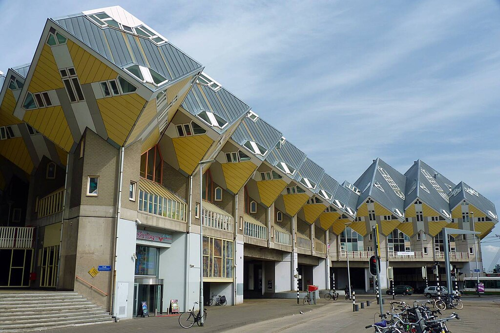
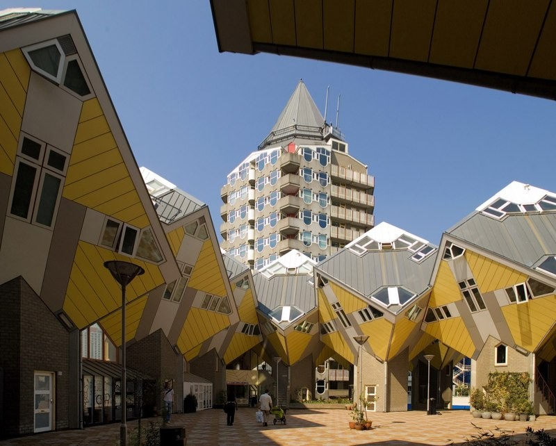
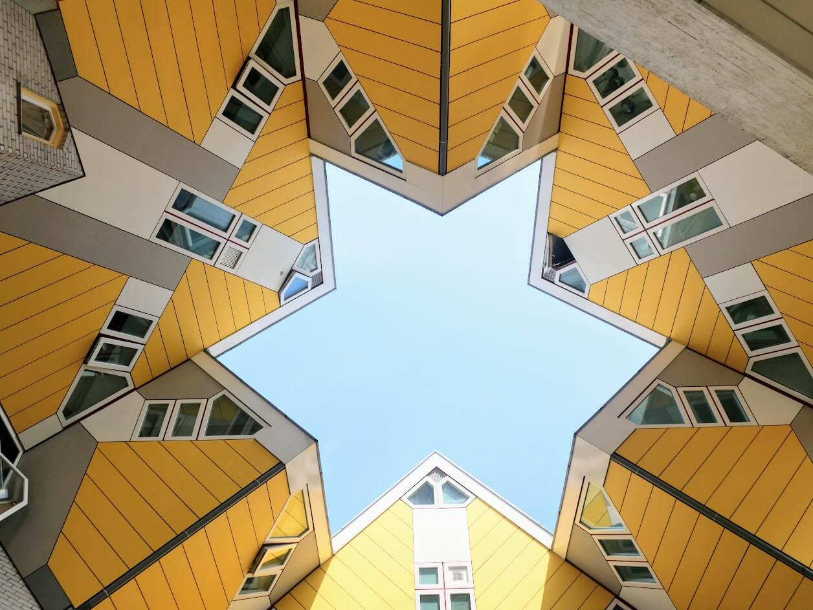

The Cube House
The Cube House is a very strange and modern building. It looks like a big yellow cube standing on one corner! The walls and windows are not straight — they are tilted, which makes the house look very interesting.
The Cube Houses are in Rotterdam, the Netherlands. They were designed by an architect named Piet Blom. He wanted to make houses that look like trees, and together they look like a small forest.
Inside the Cube House, everything is also at an angle. The rooms are small but very creative. There is a kitchen, a bedroom, and a living room. The windows give a beautiful view of the city.
Many tourists visit the Cube Houses every year. One of the houses is open to the public, so people can go inside and see how it feels to live in a cube!
The Cube House is a symbol of modern design and creativity. It shows how architecture can be fun and different.


